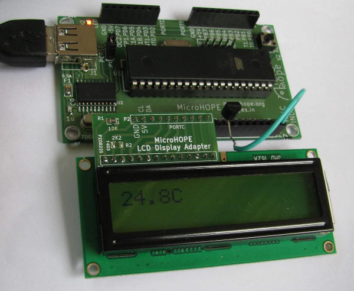
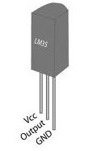

The temperature sensor IC LM35 is used for measuring temperature. The voltage output is 0 at 0 degree Celsius and increases 10 mV per degree Celsius. The output of LM35 is connected to ADC channel 0. The program temp-monitor-LM35.c reads the ADC in a loop and displays the result on the LCD. The internal 2.56 volts reference is selected. The program can be easily modified to implement temperature control. The program temp-control-LM35.c assumes that the heater control is done by PB0, configured as digital output.
 